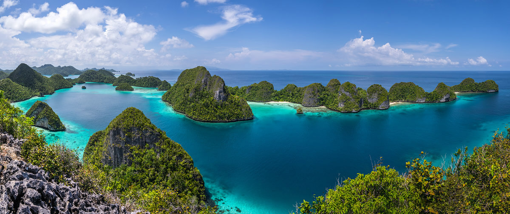
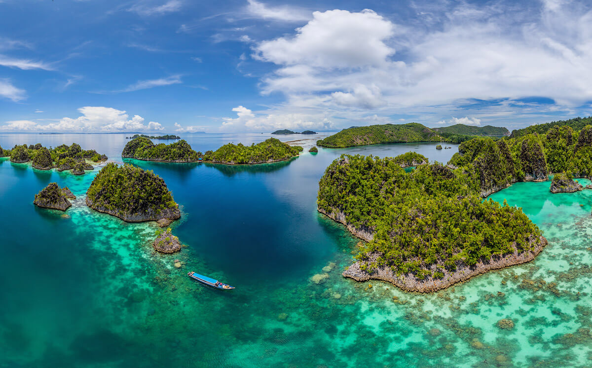
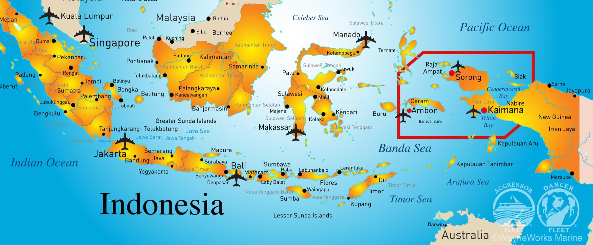
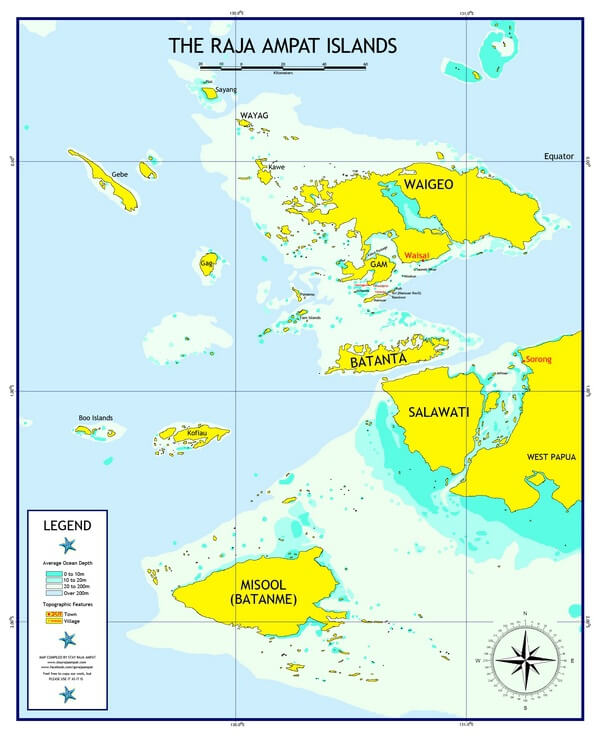
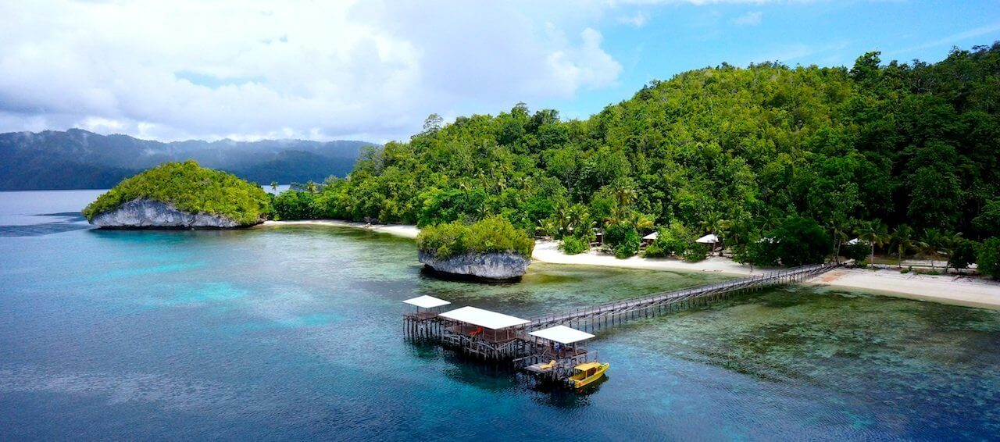
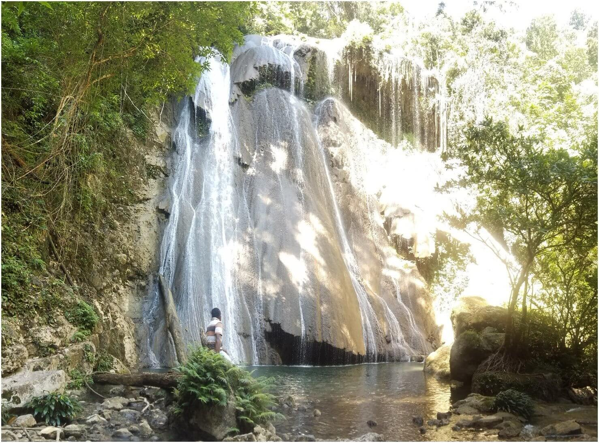
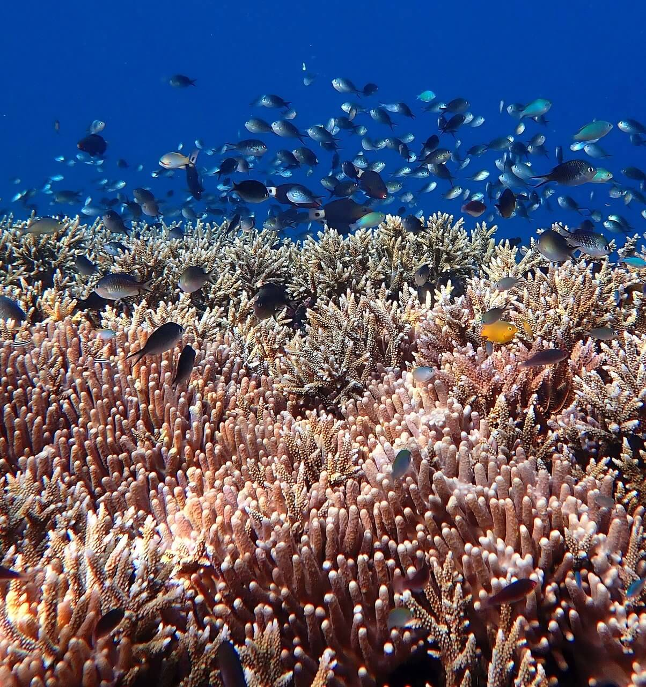
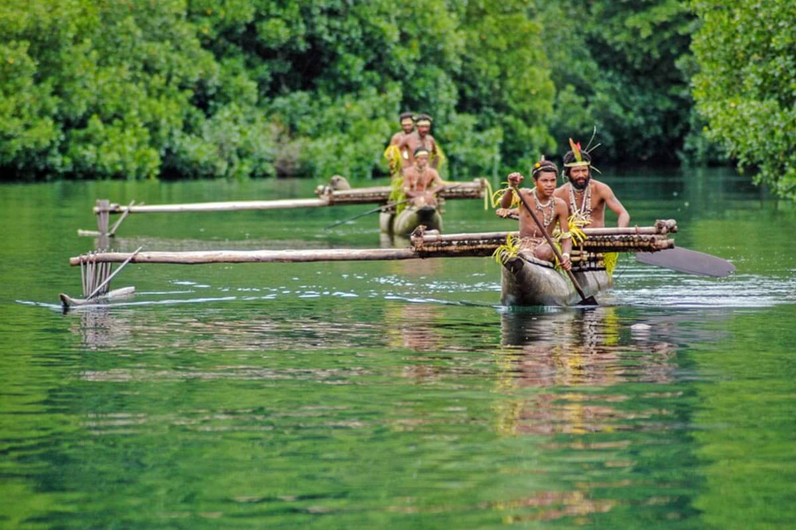

Вдали от закрывающих вид неба небоскребов, дремучих бетонных джунглей, заторов, мерцающих электрических рекламных щитов, бесконечных раздражающих звуков и других нюансов современного мегаполиса, здесь вы найдете нетронутый рай, где природа и радушные жители откроют вам необыкновенные чудеса островов Раджа Ампат (Raja Ampat), расположенных в индонезийской провинции Западное Папуа.

В этих водах зарегистрирована самая высокая концентрация твердых кораллов – более 250 видов на 1 га. Это более, чем в 4 раза превышает число видов кораллов во всем Карибском бассейне, притом на площади, равной 2 футбольным полям.

Расположенный неподалеку от полуострова Птичья Голова (Bird’s Head Peninsula), являющегося частью самого восточного острова Индонезии – Западное Папуа, Раджа Ампат, или в переводе буквально «Четыре Короля», считается архипелагом. В его состав входят 1500 маленьких островов, рифов и отмелей, которые окруженны четырьмя крупными островами: Вайгео, Батанта, Салавати и Мисул (Waigeo, Batanta, Salawati, Misool).


Название Раджа Ампат связывают с местной легендой о женщине, которая нашла семь яиц. Четыре из семи яиц проклюнулись, и из них вышли четыре царя, которые заняли четыре крупнейших острова, в то время как три других яйца стали духом, женщиной и камнем.

Именно здесь, где-то среди густых джунглей обитает знаменитая райская птица, однако встретить ее весьма не просто.

Подводный мир Раджа Ампат – одна из основных причин побывать здесь. Тысяча видов рыб, свыше 500 видов кораллов и семь сотен разновидностей моллюсков превращает архипелаг в неповторимое зрелище, притягивающее и поклонников природной красоты, и исследователей.
Ученые, к слову, поражены волшебством архипелага не меньше «обывателей»: говорят, один профессор умудрился увидеть более 250 видов рыб за одно погружение.

Помимо бесконечных увлекательных природных достопримечательностей, архипелаг Раджа Ампат славится местными жителями – племенами папуасов. В туристической деревне Арборек (Arborek) можно остановиться у нескольких семей и пообщаться с ее обитателями, наблюдая за их повседневной жизнью и самобытными традициями.
Когда приезжает группа туристов, они обычно танцуют приветственный танец прямо на причале и развлекают «гостей» народными песнями своего племени.

ВВЕРХ